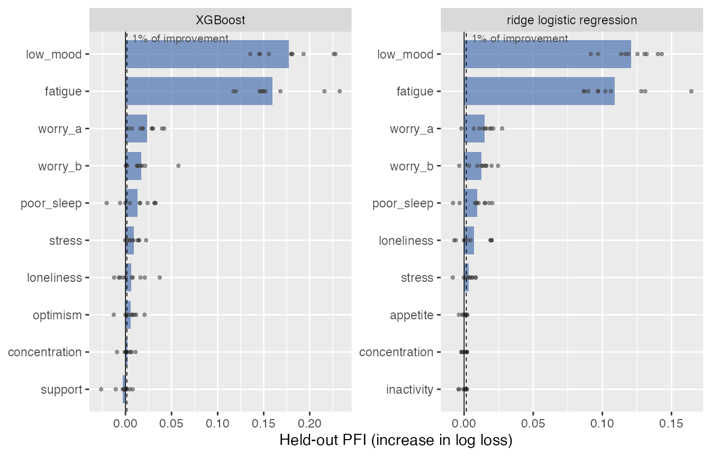
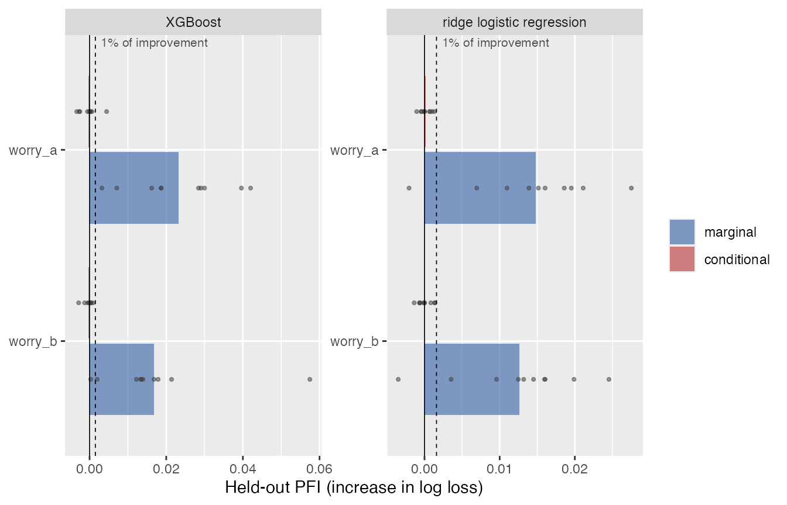

Checking what an explanation shows
Source:vignettes/exploratory_workflow.Rmd
exploratory_workflow.RmdAn explanation of a fitted model, such as permutation feature importance (PFI), often suggests a conclusion: “the model relies mainly on these two predictors.” This vignette checks such conclusions, called claims, in the order of an ordinary analysis: fit learners, compute the explanation and look at it, state the claim that the result suggests, and let the package compute the checks of Claim-Scoped Diagnostic Gates (CSDG) and the assessment. The package writes the claim, its scope, the criteria, and the observations from the computations.
Data
The simulated survey has 1,000 respondents, 12 items, and a binary
outcome, low_wellbeing. Two scale scores
(low_mood, fatigue) predict it strongly;
worry_a and worry_b are two wordings of the
same 5-point worry item, with nearly identical answers;
poor_sleep, stress, and
loneliness have weak effects; the other five items have
none.
simulate_survey = function(n, seed) {
set.seed(seed)
items = c("low_mood", "fatigue", "worry_a", "worry_b", "poor_sleep", "stress", "loneliness", "inactivity",
"appetite", "concentration", "support", "optimism")
x = as.data.table(matrix(rnorm(n * 12), n, 12, dimnames = list(NULL, items)))
worry = rnorm(n)
# two wordings of the same 5-point worry item; 2% of respondents answer them one category apart
x[, worry_a := as.integer(cut(worry + rnorm(n, sd = 0.3), c(-Inf, -1.2, -0.4, 0.4, 1.2, Inf)))]
x[, worry_b := pmin(5L, pmax(1L, worry_a + ifelse(runif(n) < 0.02, sample(c(-1L, 1L), n, TRUE), 0L)))]
eta = -0.3 + 1.2 * x$low_mood + 1.1 * x$fatigue + 0.7 * worry + 0.3 * x$poor_sleep + 0.2 * x$stress +
0.15 * x$loneliness
x[, low_wellbeing := factor(rbinom(n, 1, plogis(eta)), levels = c(0, 1))]
as_task_classif(x, target = "low_wellbeing", positive = "1", id = "survey")
}
task = simulate_survey(1000L, seed = 3L)Fit and look
csdg_fit() fits XGBoost and ridge logistic regression
with mlr3::benchmark() on the same ten cross-validation
splits, together with a model without predictors. The loss, log loss by
default, is used for the fold scores, for PFI, and for the improvement
over the model without predictors.
learners = list(
xgboost = lrn("classif.xgboost", nrounds = 100, eta = 0.1, max_depth = 3, predict_type = "prob"),
ridge = lrn("classif.cv_glmnet", alpha = 0, nfolds = 5, predict_type = "prob")
)
fits = csdg_fit(task, learners, folds = 10, seed = 1)
#> Warning: package 'future' was built under R version 4.5.2
fits
#> <CSDGFits> survey: binary classification, 1,000 rows, 12 predictors, outcome low_wellbeing (positive class 1)
#> 10-fold cross-validation; the same splits for all learners and the model without predictors (seed 1)
#> Loss for PFI and improvement: log loss (classif.logloss)
#> learner classif.logloss classif.auc classif.acc
#> XGBoost 0.539 0.805 0.724
#> ridge logistic regression 0.530 0.824 0.740
#> model without predictors 0.690 0.500 0.553csdg_importance() computes held-out PFI, the increase in
held-out log loss when one predictor is permuted, in each fold with 20
permutations.
imp = csdg_importance(fits, repetitions = 20, seed = 2)
imp
#> <CSDGImportance> held-out PFI, increase in log loss; 10 folds x 20 permutations
#> XGBoost: held-out log loss 0.539 versus 0.690 for the model without predictors (improvement 0.151)
#> predictor mean PFI relative to improvement folds in top 2
#> low_mood 0.177 117% 10/10
#> fatigue 0.160 106% 10/10
#> worry_a 0.0233 15% 0/10
#> worry_b 0.0169 11% 0/10
#> poor_sleep 0.0130 8.6% 0/10
#> stress 0.0092 6.1% 0/10
#> ... 6 more predictors
#> ridge logistic regression: held-out log loss 0.530 versus 0.690 for the model without predictors (improvement 0.159)
#> predictor mean PFI relative to improvement folds in top 2
#> low_mood 0.121 76% 10/10
#> fatigue 0.109 68% 10/10
#> worry_a 0.0148 9.3% 0/10
#> worry_b 0.0126 7.9% 0/10
#> poor_sleep 0.0094 5.9% 0/10
#> loneliness 0.0073 4.6% 0/10
#> ... 6 more predictors
#> Folds in top 2: folds in which the predictor has one of the 2 largest PFI values (print(imp, k = )).
#> PFI values are not parts of the improvement, so PFI relative to the improvement can exceed 100%.
plot(imp)
The printout reports the improvement of each learner over the model
without predictors, here 0.151 log-loss units for XGBoost. PFI values
are not parts of this improvement, so PFI relative to the improvement
can exceed 100%. In the plot, the bars are averages over folds, the
points are folds, and the dashed line marks 1% of the improvement, the
default minimum importance. summary(imp) returns the table
with corrected 95% intervals for a results table.
Claim 1: XGBoost relies mainly on two items
The result suggests that XGBoost relies mainly on
low_mood and fatigue.
claim_relies_mainly() states this as a claim: each of the
two predictors with the largest average PFI has at least twice the PFI
of every other predictor. csdg_check() computes the
properties that the claim requires.
claim1 = claim_relies_mainly(imp, k = 2, factor = 2, learners = "xgboost")
claim1
#> <CSDG claim> relies_mainly_low_mood_fatigue_xgboost
#> XGBoost relies mainly on low_mood and fatigue.
#> Origin: exploratory. Formulated after inspecting the held-out PFI of XGBoost;
#> low_mood and fatigue are its two leading predictors on average.
chk1 = csdg_check(claim1, imp)
chk1
#> <CSDG check> XGBoost relies mainly on low_mood and fatigue.
#> Criteria (defaults, see ?csdg_check): minimum importance 1% of the improvement;
#> at least 9 of 10 folds; Monte Carlo rule; corrected 95% interval must clear the
#> smallest relevant difference.
#> gate check status observation
#> G0a/b scope supported The six scope elements are generated
#> from the analysis; the claim names
#> analyzed variables, not constructs.
#> G1 performance context Held-out log loss 0.539 versus 0.690
#> for the model without predictors
#> (improvement 0.151, 22%); 10 of 10
#> folds improve.
#> G2 content supported low_mood 0.177 and fatigue 0.160 versus
#> 0.0233 for worry_a, the largest other
#> predictor (7.60 and 6.85 times); margin
#> (PFI minus 2 x PFI of worry_a) 0.130
#> [0.103, 0.158] and 0.113 [0.0547,
#> 0.171]. Against the largest other
#> predictor of each fold, which can
#> differ between folds: 0.114 [0.0933,
#> 0.136] and 0.0971 [0.0473, 0.147].
#> G2 minimum importance supported low_mood 0.177 (117%) and fatigue 0.160
#> (106%) of the improvement of 0.151
#> (0.690 to 0.539).
#> G2 procedure supported Held-out marginal PFI with log loss, 20
#> permutations per fold in 10 folds, as
#> the scope names. No grouped or
#> conditional comparison was requested.
#> G5 stability supported Selected anew in each fold: 10 of 10
#> folds reproduce the result (cutoff 1: 0
#> of 10; cutoff 3: 0 of 10).
#> G6a other learner context ridge logistic regression: the result
#> also holds (low_mood 0.121 and fatigue
#> 0.109 versus 0.0148 for worry_a).Each row is one property with its gate, check, and status. Under G2,
the content row compares the averages over folds; the margin is the PFI
of each named item minus twice the PFI of the largest other item, and it
must hold beyond Monte Carlo error and with the lower bound of its
corrected resampled t interval. The minimum importance compares each
named item with 1% of the improvement, and the procedure row records
that the wording names marginal PFI. Under G5, the selection is repeated
in each fold: 10 of 10 folds reproduce the claim. The result of ridge
logistic regression (G6a) and held-out performance (G1) are context.
print(chk1, details = TRUE) adds each criterion and its
relevance; ?csdg_check documents the criteria and their
sources.
res1 = csdg_assess(chk1)
res1
#> <CSDG assessment> XGBoost relies mainly on low_mood and fatigue.
#> Met (exploratory)
#> Specification (G0a) supported | Measurement (G0b) supported | Content (G2)
#> supported | Minimum importance (G2) supported | Procedure (G2) supported |
#> Stability (G5) supported
#> On average, low_mood and fatigue have 7.60 and 6.85 times the PFI of the
#> largest other predictor, worry_a; the result recurs in 10 of 10 folds. The
#> claim was formulated after the explanation was inspected; it is established
#> only after a test on new data (csdg_confirm()).
#> Decision options: retainThe claim is met (exploratory). It is exploratory because it was formulated after the explanation was inspected; the data that suggested it cannot also test it.
Claim 2: one wording matters more than the other
XGBoost gives the two wordings of the worry item different PFI. Given
the pair, claim_order() orders it by the average PFI and
states that XGBoost relies more on the first wording than on the
second.
claim2 = claim_order(imp, c("worry_a", "worry_b"), learners = "xgboost")
chk2_marginal = csdg_check(claim2, imp)
csdg_assess(chk2_marginal)
#> <CSDG assessment> XGBoost relies more on worry_a than on worry_b.
#> Unresolved (exploratory)
#> Specification (G0a) supported | Measurement (G0b) supported | Correlation
#> (G2) open | Content (G2) open | Minimum importance (G2) supported | Procedure
#> (G2) supported | Stability (G5) open
#> Correlation (G2) is open: the predictors worry_a and worry_b correlate r =
#> .99, and no grouped or conditional PFI was computed; also, content (G2) is
#> open: on average, worry_a 0.0233 versus worry_b 0.0169 (difference 0.0064
#> [-0.0097, 0.0225]); criterion: a positive difference; the lower bound -0.0097
#> of the corrected interval is below 0.0015; also, stability (G5) is open:
#> worry_a exceeds worry_b in 8 of 10 folds; 1 other is within Monte Carlo error
#> or below the smallest relevant difference; 1 fails beyond Monte Carlo error.
#> Withhold the claim or supply the missing evidence, for example new data;
#> where the claim matters, report it as not established.
#> Options on these results (exploratory; check before reporting): compute
#> conditional PFI (csdg_importance(imp, conditional = list(worry_a = "worry_b",
#> worry_b = "worry_a"))) or reword with marginal_only = TRUE.
#> Decision options: revise or withholdThe two wordings correlate at r = .99. Marginal PFI can shift
importance between correlated predictors, so without a comparison that
accounts for the correlation, the claim faces an unresolved threat under
G2 and is unresolved (exploratory). Conditional PFI permutes one wording
within the answers to the other, so the permuted inputs stay realistic.
Passing the existing result to csdg_importance() adds it;
the marginal values do not change.
imp2 = csdg_importance(imp, conditional = list(worry_a = "worry_b", worry_b = "worry_a"))
plot(imp2, features = c("worry_a", "worry_b"))
res2 = csdg_assess(csdg_check(claim2, imp2))
res2
#> <CSDG assessment> XGBoost relies more on worry_a than on worry_b.
#> Unresolved (exploratory)
#> Specification (G0a) supported | Measurement (G0b) supported | Content (G2)
#> open | Minimum importance (G2) supported | Procedure (G2) open | Stability
#> (G5) open
#> Content (G2) is open: on average, worry_a 0.0233 versus worry_b 0.0169
#> (difference 0.0064 [-0.0097, 0.0225]); criterion: a positive difference; the
#> lower bound -0.0097 of the corrected interval is below 0.0015; also,
#> procedure (G2) is open: conditional PFI of worry_a and worry_b is -0.0004 and
#> -0.0003 (the order is not established, within Monte Carlo error); once
#> worry_b is known, worry_a adds -0.0004 (below the minimum importance 0.0015,
#> not established by the corrected interval); also, stability (G5) is open:
#> worry_a exceeds worry_b in 8 of 10 folds; 1 other is within Monte Carlo error
#> or below the smallest relevant difference; 1 fails beyond Monte Carlo error.
#> Withhold the claim or supply the missing evidence, for example new data;
#> where the claim matters, report it as not established.
#> Options on these results (exploratory; check before reporting): marginal_only
#> = TRUE limits the wording to marginal permutation.
#> Decision options: revise or withholdOnce one wording is known, the other adds -0.00036 (worry_a) and
-0.00031 (worry_b) log-loss units. The claim is unresolved (exploratory)
(decisive: content (G2), procedure (G2), stability (G5)): conditional
PFI does not establish that either wording adds information beyond the
other. The check also reports the same comparison for ridge logistic
regression as context (G6a). With marginal_only = TRUE, the
claim would describe only marginal permutation; which wording XGBoost
uses can change with the sample.
A direction
csdg_effect() computes the accumulated local effect
(ALE) of predictors in the held-out folds and its change between the
10th and the 90th percentile. After looking at it,
claim_direction() states the sign.
eff = csdg_effect(fits, c("poor_sleep", "stress"))
eff
#> <CSDGEffect> ALE change of the predicted probability between the 10th and 90th percentiles in held-out folds; 10 folds
#> XGBoost:
#> predictor mean change corrected 95% interval folds with a positive change
#> poor_sleep 0.115 [0.0812, 0.148] 10/10
#> stress 0.0583 [0.0288, 0.0877] 10/10
#> ridge logistic regression:
#> predictor mean change corrected 95% interval folds with a positive change
#> poor_sleep 0.103 [0.0907, 0.114] 10/10
#> stress 0.0613 [0.0538, 0.0688] 10/10
#> The interval is reported descriptively; claim_direction() states a direction and csdg_check() checks it.
claim3 = claim_direction(eff, "poor_sleep", learners = "xgboost")
res3 = csdg_assess(csdg_check(claim3, eff))
res3
#> <CSDG assessment> The predictions of XGBoost rise with poor_sleep.
#> Met (exploratory)
#> Specification (G0a) supported | Measurement (G0b) supported | Content (G2)
#> supported | Procedure (G2) supported | Stability (G5) supported
#> On average, the change in the claimed direction (rise) between the 10th and
#> 90th percentiles of poor_sleep is 0.115 [0.0812, 0.148]; the change in the
#> claimed direction is at least 0.02 in 10 of 10 folds. The claim was
#> formulated after the explanation was inspected; it is established only after
#> a test on new data (csdg_confirm()).
#> Decision options: retainThis claim is met (exploratory).
Claim 1 on new data
csdg_confirm() applies claim 1 with the criteria of
chk1 to a new sample from the same population. Given a new
task, it fits the same learners with the same resampling and seeds and
computes PFI with the same settings; the two predictors are not selected
again, and the criteria were fixed before the new data were analyzed.
Rows that also occur in the data of the check are an error.
task_new = simulate_survey(1000L, seed = 1003L)
conf1 = csdg_confirm(chk1, task_new)
conf1
#> <CSDG assessment> XGBoost relies mainly on low_mood and fatigue.
#> Met (tested on new data)
#> Exploratory result: met (exploratory).
#> Specification (G0a) supported | Measurement (G0b) supported | Content (G2)
#> supported | Minimum importance (G2) supported | Procedure (G2) supported |
#> Stability (G5) supported
#> On average, low_mood and fatigue have 8.29 and 15.2 times the PFI of the
#> largest other predictor, worry_b; the result recurs in 10 of 10 folds. The
#> claim and its criteria were fixed before these data were analyzed.
#> Decision options: retainClaim 1 is met (tested on new data).
Constructs and judgments
A claim that names constructs rather than the analyzed variables
needs validity evidence for them (G0b), which the package cannot
compute. refers_to = "constructs" marks such a claim, and
csdg_judge() enters the evidence.
claim1c = claim_relies_mainly(imp, k = 2, learners = "xgboost", refers_to = "constructs")
judged = csdg_judge("G0b", supported(), note = "Both scales: omega above .85 and scalar invariance (Table S2).")
csdg_assess(csdg_check(claim1c, imp, judgments = judged))$label
#> [1] "met (exploratory)"The records
The printouts are summaries. as.data.table(chk1) holds
the full property, criterion, observation, and relevance texts;
chk1$records are the evidence records built with
csdg_evidence_record(), and res1$adjudication
is the result of csdg_adjudicate_claim().
csdg_export_assessment() writes them to a directory,
without models, predictions, or row-level data.
as.data.table(chk1)[, .(gate, check, role, status)]
#> gate check role status
#> <char> <char> <char> <char>
#> 1: G0a specification required_property supported
#> 2: G0b measurement required_property supported
#> 3: G1 performance context context
#> 4: G2 content required_property supported
#> 5: G2 minimum_importance required_property supported
#> 6: G2 procedure required_property supported
#> 7: G5 stability required_property supported
#> 8: G6a models context context
list.files(csdg_export_assessment(res1, tempdir()))
#> [1] "assessment.json" "check.csv" "claim.json" "criteria.json"
#> [5] "gate_plan.csv" "records.json"The numerical example of the article is worked through in
vignette("claim_scoped_diagnostic_gates", package = "mlr3autoiml"),
and the function
reference documents all arguments and criteria.